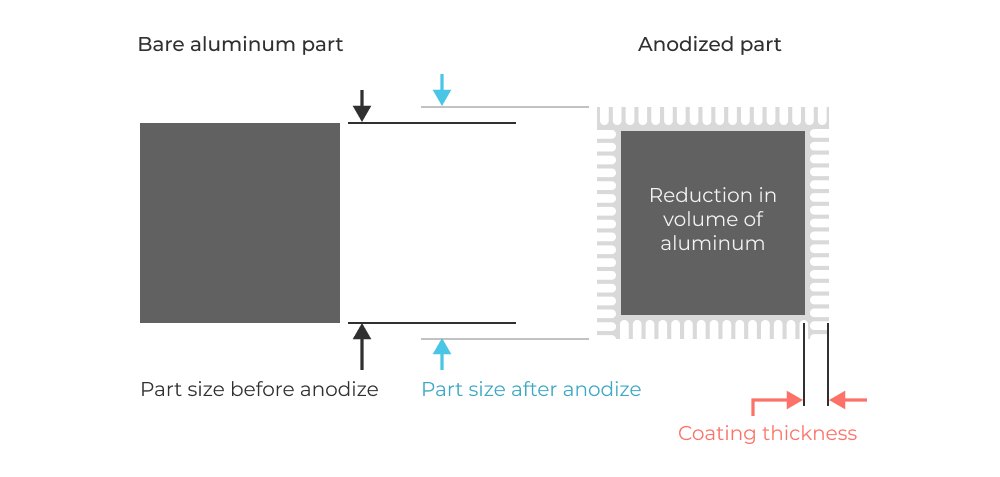
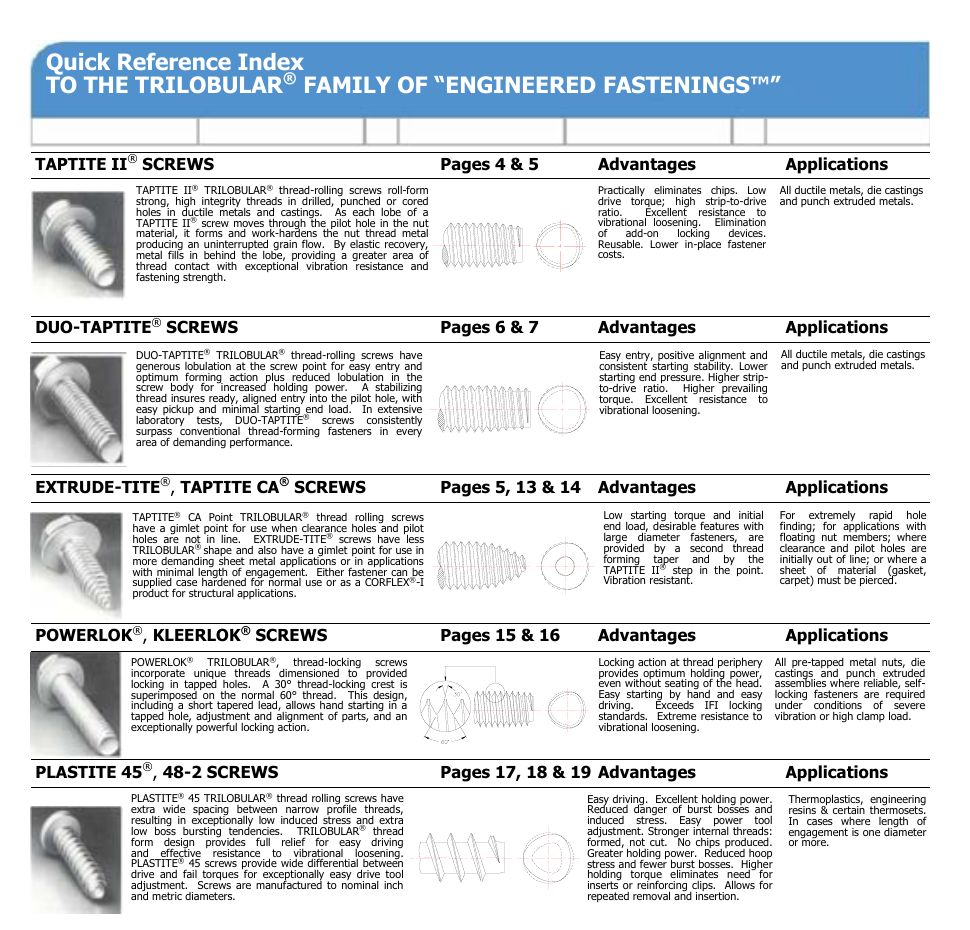
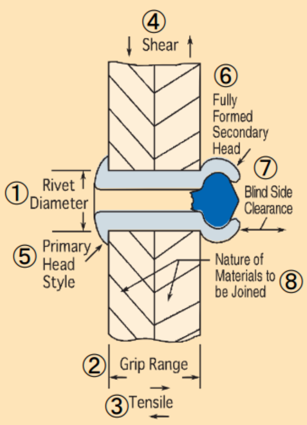
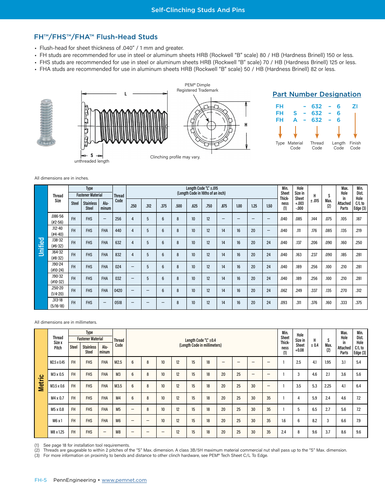

Product structure cases
结构设计案例库
按结构原理归档的产品与机械设计案例，覆盖壳体与外观件、连接与紧固、转轴与铰链、机构与运动、密封与防护、拆解与可维修、材料与工艺。参数只写来源里已有的，不估算、不编造。
分类入口
浏览全部
壳体与外观件
外壳拆分、外观件固定、壁厚/加强筋、开孔、覆面等「看得见的结构」。

连接与紧固
零件之间如何连在一起：卡扣、螺丝与嵌件、卡口、滑轨、磁吸、胶粘、焊接等。

转轴与铰链
一切转动连接：阻尼转轴、折叠屏铰链、360° 转轴、一体成型活动铰链。

机构与运动
会动的机构：按压弹跳、锁扣、齿轮/蜗杆、凸轮连杆、弹簧、柔顺机构、力反馈。

密封与防护
防水、防尘、防跌：密封圈、O 形圈、点胶、CIPG、透气膜、缓冲结构。

拆解与可维修
整机拆解分析、模块化、可维修设计，以及值得警惕的反面案例。

材料与工艺
注塑、钣金、压铸/CNC、3D 打印、包胶双色、表面处理对结构的约束与案例。
最新收录
全部案例
EJOT Delta PT 塑料用三角齿自攻螺丝：底孔 0.8·d1、20° 牙侧角与应力释放沉孔
Delta PT 是专用于热塑性塑料的自攻螺丝：主牙形角 20°（相对普通 60° 机牙侧角更窄），把塑料挤向牙侧而不是径向撑裂薄壁；Bossard 中文资料给出常用塑料的导向孔 d = 0.8·d1、孔口应力释放孔 de = d1 + 0.2 mm、柱体外径 D = 2·d1、螺纹配合长度 te = 2·d1，并且孔径不宜超过 0.88·d1。库中已有的 Boss 柱篇讲柱壁厚比和通用自攻底孔，本篇主角是这套专用牙型与孔口结构。

Nord-Lock 楔形防松垫圈：楔角大于螺纹升角的成对拉伸锁紧
Nord-Lock 原厂楔形锁紧垫圈成对使用：相互贴合的一面是楔形凸轮，朝向螺头/螺母和被连接件的一面是径向细齿。因为楔角 α 大于螺纹升角 β，螺栓一旦有松转趋势，就会沿凸轮面把一对垫圈撑开、进一步拉伸螺栓、增大夹紧力——这是**靠拉伸（tension）锁紧**，不是靠弹簧垫圈的弹力，也不是靠尼龙圈摩擦。钢垫圈（EN 1.7182）规格大约 M3–M130，硬度 ≥ 465 HV1，推荐温度 −50 °C 到 200 °C；垫圈必须比接触面硬。

Spiralock 楔形底 30° 防松内螺纹：牙顶楔入斜面消除径向间隙
Spiralock（施必牢）把防松做在**内螺纹牙型**上：牙底有 30° 楔形斜面，仍与标准 60° 外螺纹兼容。自由旋入时螺栓可以较轻松地拧到位；一旦施加预紧，螺栓牙顶楔入这道斜面，径向间隙被消除，横向微动被限制，啮合各牙的载荷也更均匀。这既不是垫圈，也不是尼龙或全金属锁紧螺母的嵌件。Machine Design 转述的研究给出过载荷分配例子：MIT/Daimler-Chrysler 计算中，Spiralock 第一圈承载约 18%、末圈约 9.4%，标准 60° 内螺纹则是约 34.1% 和 3.1%。

TAPTITE II 金属三角挤牙自攻螺丝：按啮合率选底孔
TAPTITE II 是用于延性金属（钢板、压铸件等）的三角截面（TRILOBULAR）挤牙螺丝：三个凸起依次滚压出公制内螺纹，无切屑，并靠金属回弹得到防松的保持扭矩。底孔必须按**螺纹啮合率**和被攻件厚度来选，例如手册示例：M5×0.8 配 4.58 mm 底孔对应 80% 啮合；不要把塑料自攻常用的约 0.8d 底孔直接套过来。冷轧钢板、M3×0.5、板厚 2 mm、底孔 2.75 mm 时，手册给出的攻牙扭矩约 0.35–0.55 N·m，推荐装配扭矩 1.0 N·m（实验室条件，仅作量级参考）。

尼龙嵌件锁紧螺母（DIN 985 Nyloc）：预紧力矩、120°C 上限与安装方向
Nyloc（尼龙嵌件锁紧螺母）在六角螺母顶部压入一圈内径略小于螺栓外径的尼龙环：螺栓先穿过金属螺纹，再挤入尼龙，尼龙弹性变形产生与夹紧力无关的预紧力矩（prevailing torque），用来抵抗振动松动。标准尼龙大约在 −40 °C 至 +120 °C 保持抓力；超过约 120 °C 会软化，持续高于 130–140 °C 会永久变形。必须从金属螺纹端旋入，让尼龙环最后啮合。

开口弹簧垫圈防松失效（反面案例）：压平后在横向振动中几乎无效
开口螺旋弹簧垫圈被广泛当成“防松件”，但在横向振动（Junker，DIN 65151）里几乎没有防松作用，有时还会加快松脱。原因很直接：拧到目标预紧后垫圈已经被压平，弹力可以忽略，剩下的只是一片被压扁的开口垫圈。Bolt Science 用 M8 接头做了对比试验，并指出 8.8 级及以上螺栓上，这类垫圈往往在目标预紧的约 10%–20% 就已经压平；1969 年 Junker 的工作已经表明它不能阻止松转。本篇作为反面案例，对照楔形垫圈（拉伸锁紧）和 Spiralock（改变内螺纹牙型）：不要再把弹簧垫圈当防松件。

抽芯铆钉（盲铆钉）：钉套、钉芯与断颈槽，开口型与封闭型
抽芯铆钉由钉套（铆体）和钉芯（钉杆）组成，从单面插入预钻孔，拉枪拉动钉芯使钉套在背面膨胀形成墩头，钉芯在预设断颈槽处拉断。它和拉铆螺母都是单面施工，但拉铆螺母留下可重复使用的内螺纹，抽芯铆钉是一次性永久夹紧。选型关键是夹紧范围必须覆盖工件总厚，并分清开口型（钉芯主体多被抽走、钉套空腔不密封）与封闭型（钉套尾部封闭，利于防水）。

拉铆螺母（铆螺母）：单面镦头、铆接范围与圆孔滚花及六角防转
拉铆螺母是单面安装的内螺纹紧固件：把它插入预制孔，拉枪螺杆拧入并回拉，薄壁在板背面塑性镦成鼓包，把板夹在法兰和鼓包之间，再旋出螺杆，板上留下内螺纹。和压铆螺母不同，它不靠双面加压让板料冷流进退刀槽，关键参数是**铆接范围（夹持厚度）必须覆盖实际叠层厚度**，以及圆孔滚花（摩擦防转）还是六角孔（机械防转）。

钢丝螺套（Helicoil 与 STI 底孔）：菱形钢丝嵌件与专用底孔攻丝
钢丝螺套是把菱形截面的不锈钢钢丝弹簧圈拧进专用 STI 底孔，在软基体或已损坏的螺孔里形成新的标准公制内螺纹。它既不是热熔铜螺母，也不是压铆螺母：底孔必须按 STI 丝锥加工，不能用普通螺纹底孔。M6×1.0 的麻花钻约 6.30 mm（铝件有资料取 6.25 mm），而普通 M6 攻丝底孔只有 5.0 mm；有柄型装完必须折断并取出尾柄。

钣金压铆螺钉（PEM FH 平头螺柱）：孔径、最小板厚、边距与板材硬度上限
压铆螺钉（平头螺柱）和压铆螺母成对出现：螺母在薄板上留下内螺纹孔，FH 则在薄板上留下外螺纹杆。安装时把螺柱头放进冲好的孔，平行加压，板料冷流进头部下方的压铆轮廓并咬住滚花防转，杆部从背面伸出。PEM 手册给出每个规格的孔径、最小板厚、被连接件最大孔径和孔心到边距离，例如 M3：孔 3.0 mm（+0.08）、最小板厚 1 mm、边距 5.6 mm；板材必须比螺柱软（FH 为 HRB 80 / HB 150 以下，FHS 为 HRB 70 / HB 125 以下）。

钣金压铆隔离柱（PEM SO）：孔径、最小板厚、柱长与板材硬度上限
压铆隔离柱（self-clinching standoff）把带通孔或盲孔螺纹的柱体压进冲好的圆孔，板料冷流进头部下方的槽，在两块板或 PCB 之间给出确定的间距；与压铆螺母不同，它的目的不是“几乎不增加板厚方向的支撑高度”，而是用规定的柱长 L 把两层撑开。PEM SO 通孔型例如 M3：孔径 4.22 mm（+0.08）、最小板厚 1 mm、孔心到边 6 mm、柱长系列 3–18 mm；板材必须比柱软（SO 型 HRB 80 / HB 150 以下）。

预涂微胶囊螺纹胶与现场涂厌氧锁固剂（precote 与 Loctite 243）
螺纹锁固有两条结构路线：precote 把丙烯酸酯和过氧化物分别包在微胶囊里，预先涂在螺丝上并干燥成不粘手的干膜，锁付时压力和剪切把微胶囊挤破才开始反应；Loctite 243 是现场涂的中等强度蓝色厌氧胶，在紧密金属配合面之间隔绝空气后固化，可用标准手动工具拆卸。前者适合产线预涂件，后者适合维修和灵活点胶。
精选案例
评分 5 分EJOT Delta PT 塑料用三角齿自攻螺丝：底孔 0.8·d1、20° 牙侧角与应力释放沉孔
Delta PT 是专用于热塑性塑料的自攻螺丝：主牙形角 20°（相对普通 60° 机牙侧角更窄），把塑料挤向牙侧而不是径向撑裂薄壁；Bossard 中文资料给出常用塑料的导向孔 d = 0.8·d1、孔口应力释放孔 de = d1 + 0.2 mm、柱体外径 D = 2·d1、螺纹配合长度 te = 2·d1，并且孔径不宜超过 0.88·d1。库中已有的 Boss 柱篇讲柱壁厚比和通用自攻底孔，本篇主角是这套专用牙型与孔口结构。
Nord-Lock 楔形防松垫圈：楔角大于螺纹升角的成对拉伸锁紧
Nord-Lock 原厂楔形锁紧垫圈成对使用：相互贴合的一面是楔形凸轮，朝向螺头/螺母和被连接件的一面是径向细齿。因为楔角 α 大于螺纹升角 β，螺栓一旦有松转趋势，就会沿凸轮面把一对垫圈撑开、进一步拉伸螺栓、增大夹紧力——这是**靠拉伸（tension）锁紧**，不是靠弹簧垫圈的弹力，也不是靠尼龙圈摩擦。钢垫圈（EN 1.7182）规格大约 M3–M130，硬度 ≥ 465 HV1，推荐温度 −50 °C 到 200 °C；垫圈必须比接触面硬。
Spiralock 楔形底 30° 防松内螺纹：牙顶楔入斜面消除径向间隙
Spiralock（施必牢）把防松做在**内螺纹牙型**上：牙底有 30° 楔形斜面，仍与标准 60° 外螺纹兼容。自由旋入时螺栓可以较轻松地拧到位；一旦施加预紧，螺栓牙顶楔入这道斜面，径向间隙被消除，横向微动被限制，啮合各牙的载荷也更均匀。这既不是垫圈，也不是尼龙或全金属锁紧螺母的嵌件。Machine Design 转述的研究给出过载荷分配例子：MIT/Daimler-Chrysler 计算中，Spiralock 第一圈承载约 18%、末圈约 9.4%，标准 60° 内螺纹则是约 34.1% 和 3.1%。
TAPTITE II 金属三角挤牙自攻螺丝：按啮合率选底孔
TAPTITE II 是用于延性金属（钢板、压铸件等）的三角截面（TRILOBULAR）挤牙螺丝：三个凸起依次滚压出公制内螺纹，无切屑，并靠金属回弹得到防松的保持扭矩。底孔必须按**螺纹啮合率**和被攻件厚度来选，例如手册示例：M5×0.8 配 4.58 mm 底孔对应 80% 啮合；不要把塑料自攻常用的约 0.8d 底孔直接套过来。冷轧钢板、M3×0.5、板厚 2 mm、底孔 2.75 mm 时，手册给出的攻牙扭矩约 0.35–0.55 N·m，推荐装配扭矩 1.0 N·m（实验室条件，仅作量级参考）。
尼龙嵌件锁紧螺母（DIN 985 Nyloc）：预紧力矩、120°C 上限与安装方向
Nyloc（尼龙嵌件锁紧螺母）在六角螺母顶部压入一圈内径略小于螺栓外径的尼龙环：螺栓先穿过金属螺纹，再挤入尼龙，尼龙弹性变形产生与夹紧力无关的预紧力矩（prevailing torque），用来抵抗振动松动。标准尼龙大约在 −40 °C 至 +120 °C 保持抓力；超过约 120 °C 会软化，持续高于 130–140 °C 会永久变形。必须从金属螺纹端旋入，让尼龙环最后啮合。
开口弹簧垫圈防松失效（反面案例）：压平后在横向振动中几乎无效
开口螺旋弹簧垫圈被广泛当成“防松件”，但在横向振动（Junker，DIN 65151）里几乎没有防松作用，有时还会加快松脱。原因很直接：拧到目标预紧后垫圈已经被压平，弹力可以忽略，剩下的只是一片被压扁的开口垫圈。Bolt Science 用 M8 接头做了对比试验，并指出 8.8 级及以上螺栓上，这类垫圈往往在目标预紧的约 10%–20% 就已经压平；1969 年 Junker 的工作已经表明它不能阻止松转。本篇作为反面案例，对照楔形垫圈（拉伸锁紧）和 Spiralock（改变内螺纹牙型）：不要再把弹簧垫圈当防松件。
抽芯铆钉（盲铆钉）：钉套、钉芯与断颈槽，开口型与封闭型
抽芯铆钉由钉套（铆体）和钉芯（钉杆）组成，从单面插入预钻孔，拉枪拉动钉芯使钉套在背面膨胀形成墩头，钉芯在预设断颈槽处拉断。它和拉铆螺母都是单面施工，但拉铆螺母留下可重复使用的内螺纹，抽芯铆钉是一次性永久夹紧。选型关键是夹紧范围必须覆盖工件总厚，并分清开口型（钉芯主体多被抽走、钉套空腔不密封）与封闭型（钉套尾部封闭，利于防水）。
拉铆螺母（铆螺母）：单面镦头、铆接范围与圆孔滚花及六角防转
拉铆螺母是单面安装的内螺纹紧固件：把它插入预制孔，拉枪螺杆拧入并回拉，薄壁在板背面塑性镦成鼓包，把板夹在法兰和鼓包之间，再旋出螺杆，板上留下内螺纹。和压铆螺母不同，它不靠双面加压让板料冷流进退刀槽，关键参数是**铆接范围（夹持厚度）必须覆盖实际叠层厚度**，以及圆孔滚花（摩擦防转）还是六角孔（机械防转）。
钢丝螺套（Helicoil 与 STI 底孔）：菱形钢丝嵌件与专用底孔攻丝
钢丝螺套是把菱形截面的不锈钢钢丝弹簧圈拧进专用 STI 底孔，在软基体或已损坏的螺孔里形成新的标准公制内螺纹。它既不是热熔铜螺母，也不是压铆螺母：底孔必须按 STI 丝锥加工，不能用普通螺纹底孔。M6×1.0 的麻花钻约 6.30 mm（铝件有资料取 6.25 mm），而普通 M6 攻丝底孔只有 5.0 mm；有柄型装完必须折断并取出尾柄。
钣金压铆螺钉（PEM FH 平头螺柱）：孔径、最小板厚、边距与板材硬度上限
压铆螺钉（平头螺柱）和压铆螺母成对出现：螺母在薄板上留下内螺纹孔，FH 则在薄板上留下外螺纹杆。安装时把螺柱头放进冲好的孔，平行加压，板料冷流进头部下方的压铆轮廓并咬住滚花防转，杆部从背面伸出。PEM 手册给出每个规格的孔径、最小板厚、被连接件最大孔径和孔心到边距离，例如 M3：孔 3.0 mm（+0.08）、最小板厚 1 mm、边距 5.6 mm；板材必须比螺柱软（FH 为 HRB 80 / HB 150 以下，FHS 为 HRB 70 / HB 125 以下）。
钣金压铆隔离柱（PEM SO）：孔径、最小板厚、柱长与板材硬度上限
压铆隔离柱（self-clinching standoff）把带通孔或盲孔螺纹的柱体压进冲好的圆孔，板料冷流进头部下方的槽，在两块板或 PCB 之间给出确定的间距；与压铆螺母不同，它的目的不是“几乎不增加板厚方向的支撑高度”，而是用规定的柱长 L 把两层撑开。PEM SO 通孔型例如 M3：孔径 4.22 mm（+0.08）、最小板厚 1 mm、孔心到边 6 mm、柱长系列 3–18 mm；板材必须比柱软（SO 型 HRB 80 / HB 150 以下）。
预涂微胶囊螺纹胶与现场涂厌氧锁固剂（precote 与 Loctite 243）
螺纹锁固有两条结构路线：precote 把丙烯酸酯和过氧化物分别包在微胶囊里，预先涂在螺丝上并干燥成不粘手的干膜，锁付时压力和剪切把微胶囊挤破才开始反应；Loctite 243 是现场涂的中等强度蓝色厌氧胶，在紧密金属配合面之间隔绝空气后固化，可用标准手动工具拆卸。前者适合产线预涂件，后者适合维修和灵活点胶。